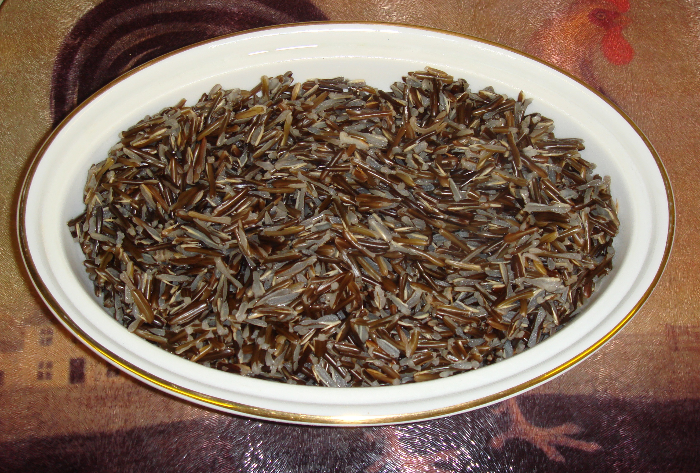
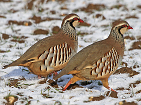
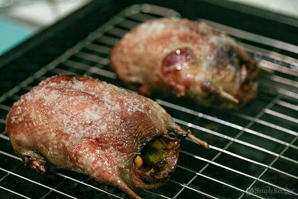

Saskatchewan Food and Drink
You can find a good selection of restaurants in all the province's cities and major towns catering
to all tastes and budgets. Alcohol is sold only in licensed stores, licensed restaurants, cocktail lounges,
and dining and beverage rooms. Retail outlets operate throughout the province.
Specialities:
- Whitefish and pickerel are marketed by aboriginal (First Nations) co-operatives.
- Wild rice harvested by First Nations people is an excellent accompaniment to the abundant wild fowl which
includes partridge, prairie chicken, wild duck and goose.
- Saskatoon berries, similar to blueberries, are used for jams, jellies and saskatoon berry pie, often eaten with fresh
cream. Other wild berries include pinchberries and cranberries, which make a tart and tangy jelly, ideal with wild fowl
meals.



Partridge
1/2 cup Rich Brown Stock (recipe follows)
6 partridges
1/4 cup butter
1/4 cup vinegar, preferably raspberry vinegar
1/4 cup brandy
2 (10 oz.) packages frozen raspberries, thawed (reserve juice)
1 tablespoon cornstarch mixed with 2 tablespoons cold water
rich brown stock
1 tablespoon butter
1 small carrot, chopped
1 small onion, copped
1 small clove garlic, chopped
1 (10 oz) can beef bouillon, undiluted
1 stalk celery, coarsely chopped
1 sprig fresh parsley or 1 teaspoon dried
1 bay leaf
1/2 teaspoon dried thyme
Salt and pepper
Prepare Rich Brown Stock: In a heavy saucepan, melt butter and stir in carrot, onion and garlic; cook over
medium low heat until soft.
Add bouillon, celery and herbs and simmer, uncovered, until stock is reduced to 1/2 cup, about 1 to 2 hours.
Skim surface to remove foam as necessary. Season with salt and pepper to taste and strain through a sieve. Makes 1/2 cup.
Truss birds with string to hold wings and legs close to the body.
In a heavy frypan, melt butter and sauté birds over medium high heat until browned on all sides. Place birds in a large casserole dish.
Pour off butter from frypan and add vinegar and brandy to pan; bring to a boil and stir to scrape up brown bits from bottom; add
juice from raspberries and boil until reduce by half. Add Rich Brown Stock and simmer sauce for 2 minutes. (Recipe may be prepared
in advance to this point.)
Pour 1/2 cup hot sauce over birds. Cook, covered, in 375 F. oven for 35 minutes (50 minutes for Cornish hens).
Stir cornstarch and water mixture into remaining hot raspberry sauce, bring to a boil and cook for 1 minute. Just before serving, stir
in raspberries. Use quail cooking juices to thin syrup if necessary.
Remove string from birds (cut Cornish hens in half) and arrange on a hot serving platter on top of a bed of Saffron rice with Currants.
Ladle sauce over birds until glazed and pass remaining sauce separately. Makes 6 servings.
Wild duck
Yield: 4 Servings
2 Ducks
Lard or shortening
Flour
Water
Salt
Pepper
1 sm Apple, quarter
1 Potato, chunked
1 Onion, quarter
7 Potatoes, cut up
2 Onions, quarter
Lightly salt and pepper inside of bird(s). Roll in flour to coat. Slowly brown bird on all sides. Remove bird to Dutch oven.
Add flour to pan drippings. Cook and stir until brown. Add water, salt, and pepper. Cook and stir until thickened. I usually
make 4-5 cups of gravy.
Stuff cavities with apple, onion, and chunked potato. Put potatoes and onions around bird. Pour gravy over all. Cover.
Bake slowly 3 1/2 - 4 hours or until the meat is falling off the bones -- tender and moist. Serve 1/2 duck to each person or
slice goose. Pass potatoes, onions and gravy.